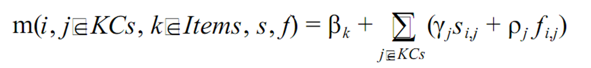
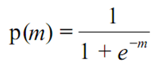
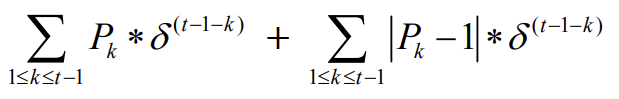
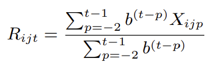
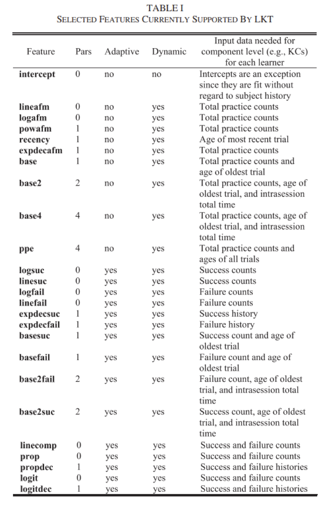

Module 2: Logistic Knowledge Tracing and Performance Factors Analysis
KT Learning Lab 2: A Conceptual Overview
Logistic Knowledge Tracing
A broad framework for knowledge tracing models based on logistic regression (Pavlik, Eglington, & Harrell-Williams, 2021)
Performance Factors Analysis
First member of the LKT family that ran in real-time (Pavlik et al., 2009)

PFA
Measures how much latent skill a student has, while they are learning
But expresses it in terms of probability of correctness, the next time the skill is encountered
No direct expression of the amount of latent skill, except this probability of correctness
What is the typical use of PFA?
Assess a student’s knowledge of topic X
Based on a sequence of items that are dichotomously scored
- E.g. the student can get a score of 0 or 1 on each item
Where the student can learn on each item, due to help, feedback, scaffolding, etc.
How does PFA differ from BKT?
Key assumptions
Each item may involve multiple latent skills or knowledge components
- Different from BKT
Each skill has success learning rate γ and failure learning rate ρ
- Different from BKT where learning rate is the same, success or failure
Key assumptions
There is also a difficulty parameter β, but its semantics can vary – more on this later
From these parameters, and the number of successes and failures the student has had on each relevant skill so far, we can compute the probability P(m) that the learner will get the item correct
PFA

Let’s go over what each of these parameters means
Reasonable Example
γ = 0.2, ρ = 0.1, β = -0.5
| Actual | m | P(m) |
|---|---|---|
| -0.5 | 0.38 | |
Reasonable Example
γ = 0.2, ρ = 0.1, β = -0.5
| Actual | m | P(m) |
|---|---|---|
| 0 | -0.5 | 0.38 |
| -0.5+(0.1)*1 |
Reasonable Example
γ = 0.2, ρ = 0.1, β = -0.5
| Actual | m | P(m) |
|---|---|---|
| 0 | -0.5 | 0.38 |
| -0.4 | 0.40 |
Reasonable Example
γ = 0.2, ρ = 0.1, β = -0.5
| Actual | m | P(m) |
|---|---|---|
| 0 | -0.5 | 0.38 |
| 0 | -0.4 | 0.40 |
Reasonable Example
γ = 0.2, ρ = 0.1, β = -0.5
| Actual | m | P(m) |
|---|---|---|
| 0 | -0.5 | 0.38 |
| 0 | -0.4 | 0.40 |
| -0.5+(0.1*2) |
Reasonable Example
γ = 0.2, ρ = 0.1, β = -0.5
| Actual | m | P(m) |
|---|---|---|
| 0 | -0.5 | 0.38 |
| 0 | -0.4 | 0.40 |
| -0.3 | 0.43 |
Reasonable Example
γ = 0.2, ρ = 0.1, β = -0.5
| Actual | m | P(m) |
|---|---|---|
| 0 | -0.5 | 0.38 |
| 0 | -0.4 | 0.40 |
| 1 | -0.3 | 0.43 |
| -0.5+(0.1*2)+(0.2*1) |
Reasonable Example
γ = 0.2, ρ = 0.1, β = -0.5
| Actual | m | P(m) |
|---|---|---|
| 0 | -0.5 | 0.38 |
| 0 | -0.4 | 0.40 |
| 1 | -0.3 | 0.43 |
| -0.1 | 0.48 |
How Does PFA
Represent when the student learns from an opportunity to practice?
As opposed to just better predicted performance because you’ve gotten it right
How Does PFA
- Represent when the student learns from an opportunity to practice?
As opposed to just better predicted performance because you’ve gotten it right
Is it ρ ?
Is it average of ρ and γ?
Degeneracy in PFA Maier, Baker, and Stalzer (2021)
Three degenerate cases
γ < 0
γ < ρ
γ = ρ = 0
What do each of these mean?
When might you legitimately get them?
ρ < 0
γ < ρ
γ < 0
Degeneracy in PFA Maier, Baker, and Stalzer (2021)
Three degenerate cases
γ < 0
γ < ρ
γ = ρ = 0
One seemingly degenerate (but not) case
- ρ > 0
“It is worth noting that a fourth case when ρ > 0 – is not degenerate, due to the multiple functions the parameters perform in PFA. In this case, the rate of learning the skill may outweigh the evidence of lack of student knowledge that an incorrect answer provides. So long as γ > ρ, a positive ρ is conceptually acceptable.”
Degenerate Example (Case 1)
γ = -0.1, ρ = -0.5, β = -0.5
| Actual | m | P(m) |
|---|---|---|
| 0 | -0.5 | 0.38 |
| 0 | -1 | 0.27 |
| 1 | -1.5 | 0.18 |
| -1.6 | 0.17 |
Degenerate Example (Case 2)
γ = 0.1, ρ = 0.2, β = -0.5
| Actual | m | P(m) |
| 0 | -0.5 | 0.38 |
| 0 | -0.3 | 0.43 |
| 1 | -0.1 | 0.48 |
| 0 | 0.5 |
Note
Values of ρ below 0 don’t actually mean negative learning
They mean that failure provides more evidence on lack of knowledge
Than the learning opportunity causes improvement
Addressing Degeneracy Maier, Baker, and Stalzer (2021)
Simply bound γ and ρ
Does not reduce model performance substantially (just like BKT)
What causes degeneracy? We’ll come back to this in a minute
Note
Parameters in PFA combine information from correctness with improvement from practice improvement
Makes PFA models a little harder to interpret than BKT
Adjusting β
γ = 0.2, ρ = 0.1, β = -0.5
| Actual | m | P(m) |
| 0 | -0.5 | 0.38 |
| 0 | -0.4 | 0.40 |
| 1 | -0.3 | 0.43 |
| -0.1 | 0.48 |
Adjusting β
γ = 0.2, ρ = 0.1, β = -1.5
| Actual | m | P(m) |
| 0 | -1.5 | 0.18 |
| 0 | -1.4 | 0.20 |
| 1 | -1.3 | 0.21 |
| -1.1 | 0.25 |
Adjusting β
γ = 0.2, ρ = 0.1, β = +3.0
| Actual | m | P(m) |
| 0 | 3.0 | 0.953 |
| 0 | 3.1 | 0.957 |
| 1 | 3.2 | 0.961 |
| 3.4 | 0.968 |
β Parameters
Pavlik proposes three different β Parameters
Item
Item-Type
Skill
Result in different number of parameters
- And greater or lesser potential concern about over-fitting
What are the circumstances where you might want item versus skill?
Causes of Degeneracy Maier, Baker, and Stalzer (2021)
If β is used at the Skill or Item-Type level
And the learning system moves students from easier to harder items within a “skill”
Then γ < 0.
Also, if items are tagged with multiple skills, shared variance (collinearity) between skills could produce degenerate parameters.
Fitting PFA
- Typically Expectation Maximization is used
Expectation Maximization
Starts with initial values for each parameter
Estimates student correctness at each problem step
Estimates params using student correctness estimates
If goodness is substantially better than last time it was estimated, and max iterations has not been reached, go to step 2
Expectation Maximization
EM is vulnerable to local minima
Randomized restart typically used
Is PFA better than BKT?
Approximately equal predictive power across a lot of studies (Pavlik et al., 2009; Gong et al., 2010; Baker et al., 2011; Pardos et al., 2011, 2012)
Different virtues and flaws – choose the one that better fits your goals
Is PFA used in the real world?
Yes, but far fewer learning systems than BKT
Maier, Baker, and Stalzer (2021) discuss its use in Reveal Math 1
Using PFA in the real world
One issue in real-world use is handling rare skills, which can impact model inferences on common skills as well
- Because PFA is used in cases with items tagged to multiple skills
Maier, Baker, and Stalzer (2021) handle this by creating a “catch all” skill for rare skills
Using average parameters from all common skills also works
Final Thoughts on (original)PFA
PFA is a competitor for measuring student skill, which predicts the probability of correctness rather than latent knowledge
Can handle multiple KCs for the same item, a big virtue
Beyond PFA
- Can we improve PFA based on what the field knows about learner memory?
PFA-Decay Gong, Beck, and Heffernan (2011)
Weights actions further back in order less strongly
Adds an evidence decay parameter δ
Substitutes

For the previous summation
Very slightly higher AUC (0.003)
R-PFA Galyardt and Goldin (2014)
Weights actions further back in order less strongly
Looks at proportion of success-failure, weighting by distance in order from current action
Adds an evidence decay parameter b
Adds “ghost practices” before current practice to make math work
Substitutes

For the previous summation
A little higher AUC (0.003-0.027) (Pavlik et al., 2021)
LKT Pavlik, Eglington, and Harrell-Williams (2021)
Creates a general framework for variants of PFA
Test

LKT (Pavlik et al., 2021)
Ongoing work on variants to PFA typically frames itself in terms of LKT components (and proposes additional components)
Examples
Fluctuation in response time(Chu & Pavlik, 2023)
Different models of memory decay and spacing effect(Maier et al., 2023).
When to use LKT
Some items have multiple skills
Learning likely to be gradual rather than sudden
Relatively small amounts of data
You want to add new items without refitting the model